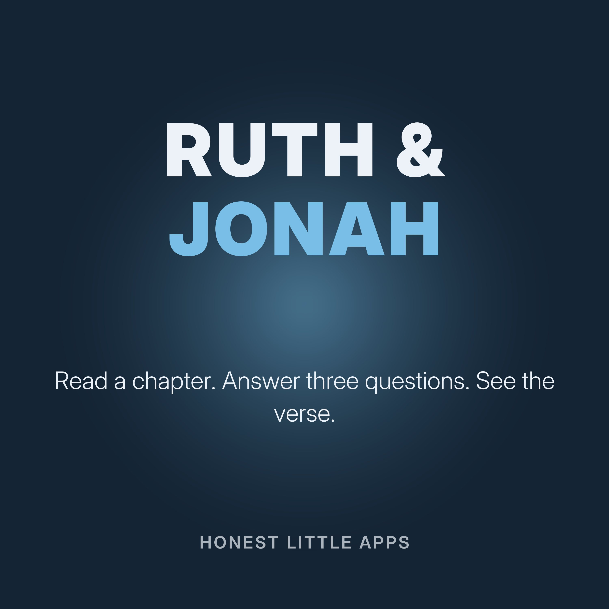

Ruth and Jonah, Chapter by Chapter
A short Bible study you can follow on a walk or lead with a small group. Each episode reads one full chapter of Ruth or Jonah from the World English Bible (public domain), then asks three questions about what happened, with the verse that answers each one.
Made by Honest Little Apps, the makers of Wayfold: Understand the Bible, an iPhone Bible study app where Ruth and Jonah, with printable leader guides, are free. Narrated with a synthetic (text-to-speech) voice.
- Ruth chapter 1: Where you go, I will goRead the full chapter, then three questions with the verse that answers each one.
- Ruth chapter 2: Gleaning in Boaz's fieldRead the full chapter, then three questions with the verse that answers each one.
- Ruth chapter 3: At the threshing floorRead the full chapter, then three questions with the verse that answers each one.
- Ruth chapter 4: The redeemerRead the full chapter, then three questions with the verse that answers each one.
- Jonah chapter 1: Running from GodRead the full chapter, then three questions with the verse that answers each one.
- Jonah chapter 2: A prayer from the deepRead the full chapter, then three questions with the verse that answers each one.
- Jonah chapter 3: Nineveh turnsRead the full chapter, then three questions with the verse that answers each one.
- Jonah chapter 4: The plant and the questionRead the full chapter, then three questions with the verse that answers each one.